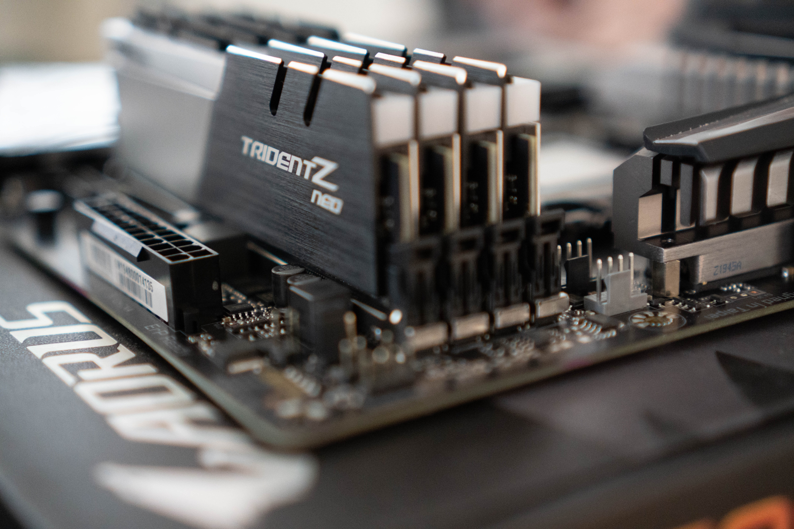

The RAM also known as random-access memory is another component needed to build a computer. What is random-access memory? The random-access memory is a vital component to the computer’s performance. Random-access memory provides a place to store information and retrieve information for short-term use. The random-access memory stores information, so it can be retrieved quickly.
The more applications a person has running, the more random-access memory is needed. When a person is building a gaming computer for example, they will often use more RAM versus using less because of the level of performance needed for gaming. If an individual wants to multitask when working from home or at an office, the amount of RAM needed will be more than 4 Gb of RAM. Some programs will require more memory than other programs, therefore the amount of RAM needed will depend on those programs.
If an individual is buying a pre-built computer there are choices on how much RAM a company will provide. Dell offers many pre-builds at different price points and multiple choices among different models. The consumer would not normally choose the manufacturer of the RAM. The company selling the pre-build would just give the consumer the choice of how many gigabytes they wanted among the different models. If an individual wanted to choose the manufacturer of the RAM a person would have to either build their own computer or have one custom made.